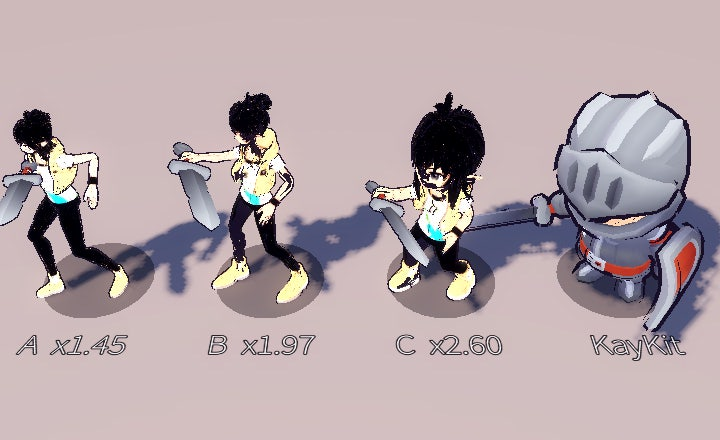
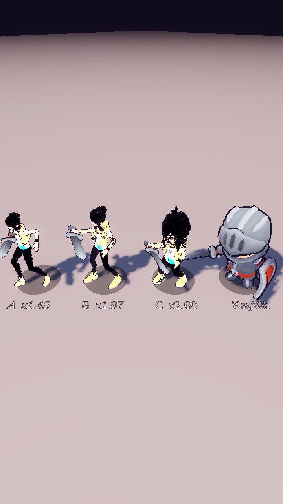
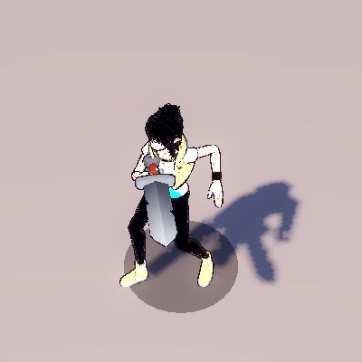
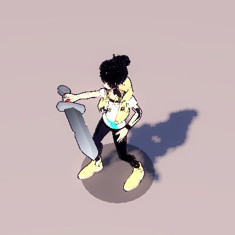
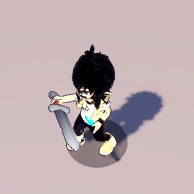
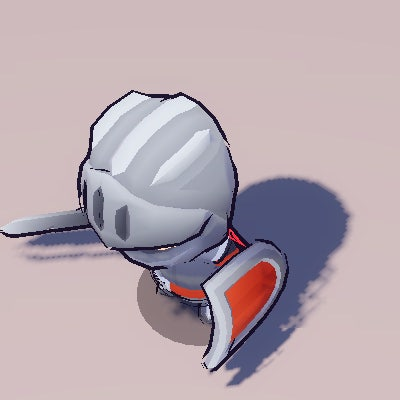
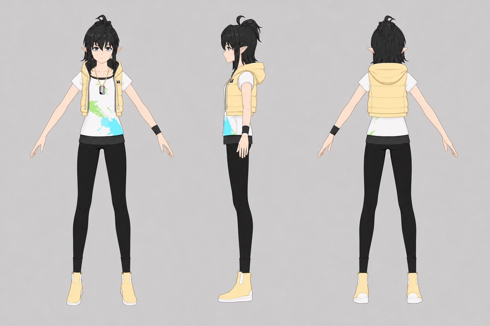
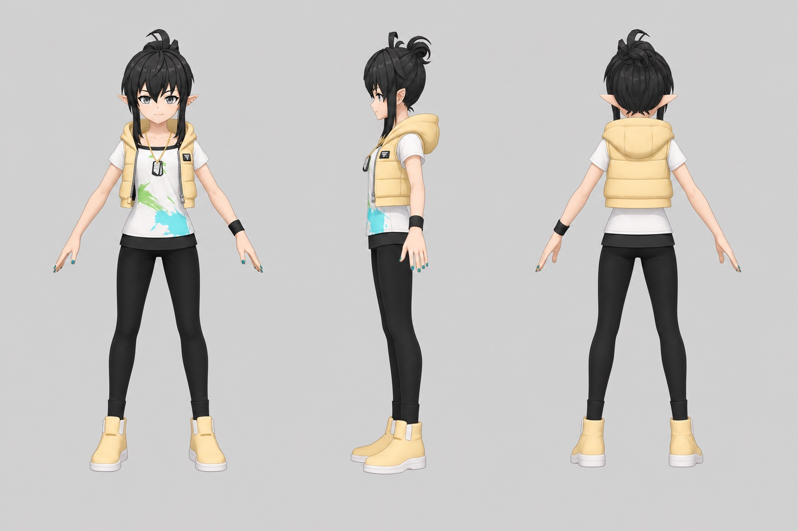
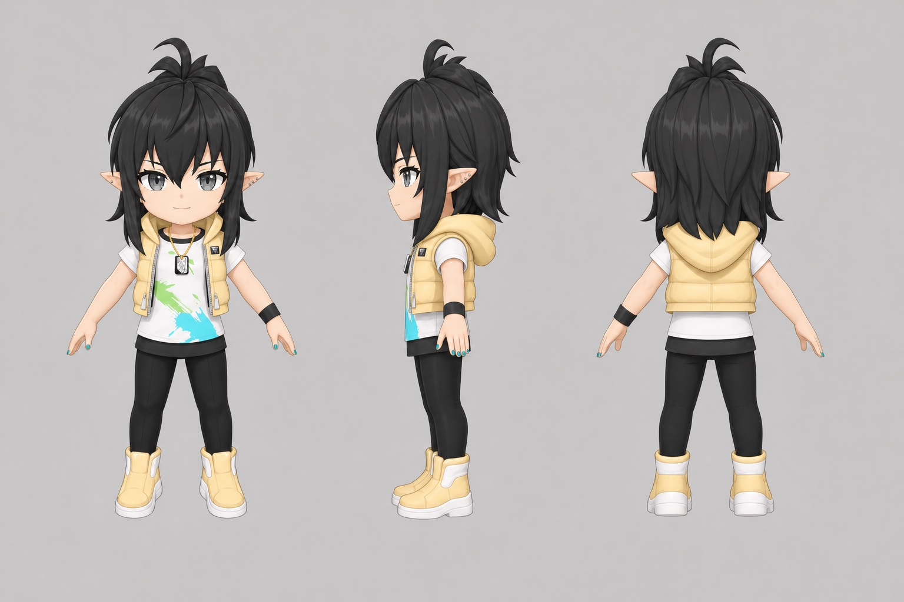

아스트리드(프라우)를 원작 비율 A, 중간 비율 B, SD 비율 C 세 가지로 만들었습니다. 게임에 어느 비율을 쓸지 고르기 위해, 실제 Godot 게임 카메라로 찍은 화면과 돌려 볼 수 있는 3D 모델, 3면도, 항목별 장단점을 한곳에 모았습니다.
Godot 게임과 같은 카메라, 환경, 툰 셰이더로 찍었습니다. 바닥은 무늬 없는 회색이고 조명은 따뜻한 주광과 차가운 보조광입니다. 폰에서 이 그림이 화면 폭에 꽉 차면 실제 게임에서 보이는 크기와 거의 같습니다.


게임처럼 초점을 영웅에서 화면 위쪽으로 1.6 m 당겨 영웅이 화면 아래쪽에 오게 했습니다. 각 칸은 그 화면에서 400×400 px를 원래 픽셀 그대로 잘라 낸 것입니다.




숫자는 720 px 폭 화면에서 발부터 정수리까지(키 기준)의 세로 픽셀입니다. 아래 글의 머리 크기는 이 값을 등신으로 나눈 어림값입니다.
Fx.toonify 0.014)을 그대로 쓰면 B와 C는 외곽선 껍데기가 몸 앞을 검게 덮고, A는 뼈대 배율이 0.01이라 선이 사라집니다. 이 렌더에서는 세 안 모두 월드 기준 0.005로 맞췄습니다.동작을 고르면 세 모델이 같은 동작을 처음부터 함께 재생합니다. 끌어서 돌리고, 두 손가락이나 휠로 확대합니다. 모델 파일이 4–5 MB라 처음 불러올 때 몇 초 걸립니다.
카드 옆 막대는 키에 비례한 등신 자입니다. 칸 하나가 머리 하나이고, 맨 위 칸이 머리입니다. 세 모델의 머리 크기는 A안(1.70 m)에 맞춰 만들었습니다.
gpt-image-2로 만든 정면, 옆면, 뒷면 그림입니다. Meshy multi-image-to-3d의 입력으로 썼습니다.



세로 화면, 8 m 거리의 아이소 카메라, 한 손가락 조작, KayKit 던전과 해골 적을 전제로 판단했습니다. 판독성 항목은 Knight 키에 맞춘 렌더를 기준으로 했습니다.
| 항목 | A 원작 | B 중간 | C SD |
|---|---|---|---|
| 아이소 카메라 8 m 판독성 | 불리 머리 약 30 px. 얼굴과 표정이 보이지 않고 긴 다리가 실루엣을 차지합니다. |
유리 머리 약 45 px. 머리 모양, 옷 색, 검이 모두 구분됩니다. |
보통 머리 약 80 px로 얼굴은 가장 크지만 위에서 보면 머리가 상체와 팔을 가립니다. |
| 한 손가락 액션 | 보통 런지와 구르기의 동작 폭은 크지만 몸이 가늘어 방향 전환과 피격 반응이 작게 보입니다. |
유리 향한 방향과 자세 변화가 모두 보이는 크기입니다. |
보통 머리로 방향은 바로 읽히지만 팔다리가 짧아 동작 폭이 작습니다. |
| 검 휘두름 가독성 | 보통 검이 가늘고, 수평 베기 타격 순간에는 앞을 향해 짧아 보입니다. |
유리 팔과 검이 몸 밖으로 나와 궤적이 읽힙니다. |
보통 칼날은 크게 보이지만 팔이 짧아 궤적 반지름이 작고 머리와 가깝습니다. |
| KayKit·환경과의 어울림 | 불리 큰 머리 SD 체형인 Knight와 해골 사이에서 혼자 사실적 비율이라 튑니다. |
보통 어색하지 않지만 KayKit보다 머리가 작아 한 세트로 보이지는 않습니다. |
유리 KayKit Knight(투구까지 약 2등신)와 비율이 가장 가깝습니다. |
| 애니메이션 비용 | 유리 사람 비율이라 Meshy 동작 라이브러리를 거의 그대로 쓸 수 있습니다. |
보통 Meshy 동작이 대체로 맞지만 검이 몸을 뚫는 프레임을 확인해야 합니다. |
불리 큰 머리와 짧은 팔 때문에 동작마다 손봐야 합니다. attack_3은 손 위치를 옮겨 머리 관통을 피했습니다. |
| 원작 충실도 | 유리 원작의 약 7등신 비율과 인상을 그대로 따릅니다. |
보통 의상과 색은 원작대로이고 비율만 줄였습니다. |
불리 SD로 다시 그린 모습이라 원작 일러스트와 인상이 다릅니다. |
정해진 답은 없고 무엇을 우선하느냐에 달려 있습니다. 원작 재현이 가장 중요하면 A, 지금의 KayKit 화면과 귀여운 손맛이 가장 중요하면 C, 둘을 절충하려면 B가 맞습니다. 렌더만 놓고 보면 B가 가장 무난했습니다. Knight 키에 맞췄을 때 얼굴, 옷 색, 검이 모두 읽히고, 사람 비율 동작을 크게 고치지 않고 쓸 수 있습니다. C는 KayKit 세계와 가장 잘 어울리지만 위에서 내려다보는 카메라에서 머리가 몸과 검 동작을 가립니다. A는 원작에 가장 충실하지만 이 거리에서는 얼굴이 거의 보이지 않습니다. 배경과 적을 나중에 원작풍 에셋으로 바꿀 계획이라면 A의 단점인 환경과의 부조화는 줄어듭니다.
어느 안이든 게임에 넣기 전에 할 일: 배율(A ×1.45, B ×1.97, C ×2.60) 정하기, 외곽선 굵기를 모델별로 다시 맞추기, 삼각형 수 줄이기(세 안 모두 약 31,000개로 Knight 약 5,300개의 6배).
ploh/game/tests/compare_shot.tscn입니다. 720×1280 SubViewport에 그려 PNG로 저장했습니다. 창이 화면 크기에 맞춰 줄어도 렌더 해상도가 바뀌지 않게 하기 위해서입니다.KEEP_WIDTH)입니다. 줄 비교는 줄 가운데 바닥에서 1 m 위를 봅니다. 한 명씩 찍은 그림은 게임처럼 초점을 화면 위쪽으로 1.6 m 당겼습니다.1H_Melee_Attack_Slice_Diagonal은 칼끝이 가장 빠른 0.433초입니다. 대기는 0.5초 지점입니다.game.gd의 _build_env와 같습니다(주변광, Filmic 톤매핑, 글로우, 안개). 조명은 따뜻한 주광(그림자 있음)과 차가운 보조광 두 개이고, 발밑에 게임과 같은 그림자 원을 깔았습니다.Fx.toonify로 입혔습니다. 외곽선은 Knight에 게임 값 0.014를, 아스트리드 세 안에는 월드 기준 0.005를 썼습니다.